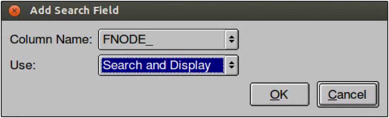
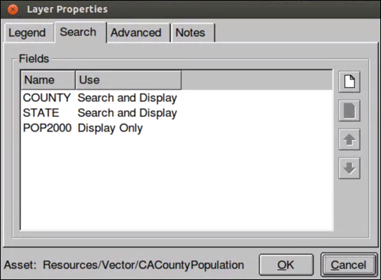
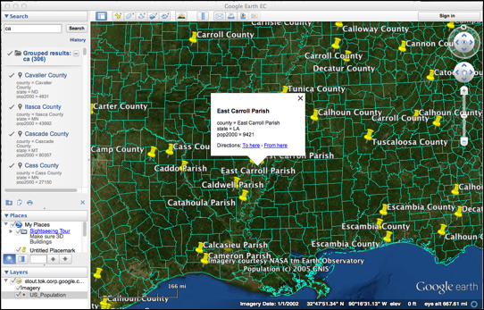
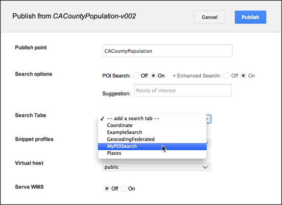

Search your POI vector data or map layer data¶
With GEE, you can perform simple text searches of your POI vector data or map layer data. If you have one or more text fields that you would like to query from vector or map layer data in a project, you can simply add those search fields to that vector data’s layer. You include the layer as part of the vector project that you want to include in the 2D or 3D database.
For example, you may be interested in displaying the US Census Bureau population statistics on your map or globe, based on county name. Once you have added the census data as a layer in a vector project, you can easily add the search fields to the individual population data layer in the vector project. You can also choose how you want the labels for the search results to appear on the map, such as search and display a field, or simply display it.
Add search fields to individual layers of your vector projects
After you have added a layer to a vector project, you can configure it to add search functionality. You use the Search tab in the Layer Properties dialog to specify one or more search fields to query your source data.
To add search fields to individual layers of a vector project:
In the Asset Manager, double-click the name of the project in which you want to modify layers. The Vector Project Editor displays the list of layers included in the project.
View the layer properties for a resource in a project by right-clicking the layer name in the Vector Project Editor and selecting Layer Properties from the context menu.
Click the Search tab in the Layer Properties dialog.

Click
 . The Add Search Field dialog appears.
. The Add Search Field dialog appears.
Select the desired field from the Column Name drop-down list. Select an option from the Use drop-down list:
- Search Only - Google Earth EC searches against the selected field but does not display the results.
- Display Only - Google Earth EC displays the values of the selected field in the results but does not search against the selected field.
- Search and Display - Google Earth EC searches against the selected field and displays the results.
An example of search fields added to a layer in a vector project describes the use of US Census Bureau data and setting up fields to query the County name and display the population per county in the results shown in the client. See the tutorial lesson Specifying Search Fields for Individual Layers.
Repeat the steps above for each additional field you want to add to the search. Your selections appear on the list of search fields on the Search tab in the order in which you added them:

The order in which the fields appear on this list is the order in which they appear in the description balloon in the client. (The fields designated as Search Only do not affect the order in which the fields to be displayed appear.)
To change the order in which the fields appear, select a field and use the
 and
and  arrows.
arrows.To remove a field, select it and click
 .
.Click the OK button to save the Search field properties.
Select File > Save in the Vector Project Editor to save the changes to the layer.
Note
This search performs an exact match, which means that the Google Earth EC user must enter the value exactly as it appears in the database. It can also perform a wildcard search, so users can enter part of the text they want to match. For example, if a user enters “dakota” in a state search, the search results match “North Dakota” and “South Dakota”.
Once you have added your POI vector project to the database you want to publish, push it to GEE Server, then turn on POI Search when you publish.

Setting the +Enhanced Search to On will first perform a POI search against the vector data in your database, and if no results are found, perform an Enhanced Search using the GeocodingFederated search plug-in, searching your database for queried places or coordinates.
For example, if your query in Google Earth EC for a city name returned no results via the POI search plug-in, the GeoFederated search plugin would automatically search for that city name.
Note
The POI Search option in the Publish dialog is only available if you build your database with POI data as a vector resource layer. If you want to perform a POI search on a database external to your globe or map, e.g., on a different server, you can use the POI Search tab or create your own custom search plug-in.
Once you have added the search fields, the main Search tab in Google Earth EC displays the POI search and includes the field(s) that you specified for your queries.

Specify POI Search tab settings
You can also modify the appearance of the POI search tab in Google Earth EC by editing the system search tab, POI Search, which sets the query parameters for the search fields you added to your vector layer, as well as specifying the labels for the tab, query field, and suggestion box.
To specify the settings of the POI Search tab:
In the GEE Server Admin console, click Search tabs.
Check the box next to POISearch, then click Edit.
The Edit Search Definition dialog appears.

Edit the name of the system search tab to create your own POISearch tab definition. You cannot modify system search tabs without changing the name.
Edit the label, specify any query parameters and modify the field label and suggestion box as required.
Click the Save button.
Click Databases to swtich to the list of available databases on GEE Server. Check the box next to the database you want to publish with search, then click Publish. The Publish dialog appears.
Change the POI Search option to On.
Setting the +Enhanced Search to On also will first perform a POI search against the vector data in your database, and then, if no results are found, perform an Enhanced Search using the GeocodingFederated search plug-in, searching your database for queried places or coordinates.
Click the Search tabs drop-down list to add your POI search tab.

Click the Publish button. A message appears to confirm the successful publishing process.